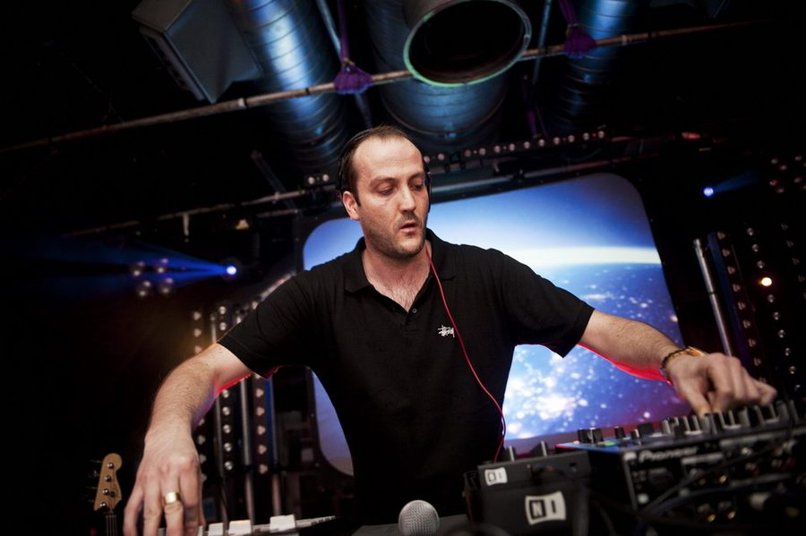

Betterdays NYD 2010 lines up with Cassius & Fred Falke



For everyone who wants to spend their New Years Day in a lush setting overlooking Melbourne’s Albert Park again, Betterdays will be returning again on Friday January 1st. What’s even better though is that it’s been announced that international guests Cassius and Fred Falke will both be coming along to enjoy the summer party vibes.
Cassius will be bringing their famous ‘Dex n FX’ show, performing across two mixers, four turntables and EFX machines. Fred Falke will also be playing at the end of what’s been a superb winning streak for the DJ/producer over the past 12 months, which has seen him deliver high-profile remixes for the likes of Little Boots, La Roux, Annie, The Gossip and much more.
Betterdays lands in Melbourne’s Carousel on Albert Park Lake on Friday December 1st, check out the first-round lineup below:
Cassius
Fred Falke
Tara McDonald
John Course
Grant Smillie
Franky D
Andy Murphy
Mr Stoj
James Belias
Wei Shen